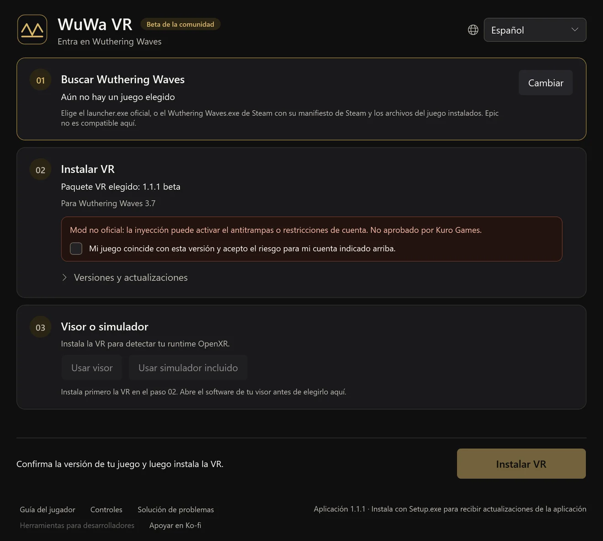
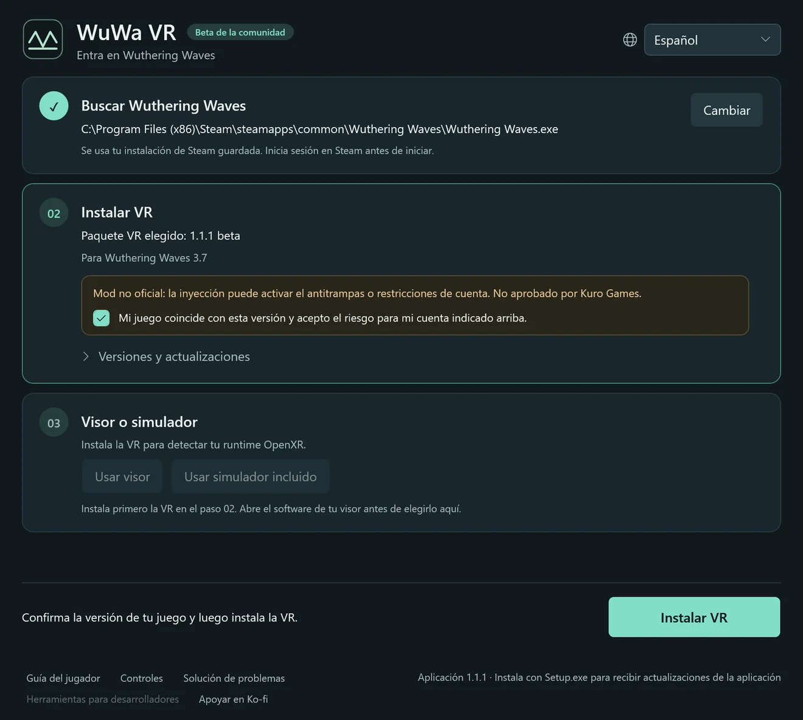
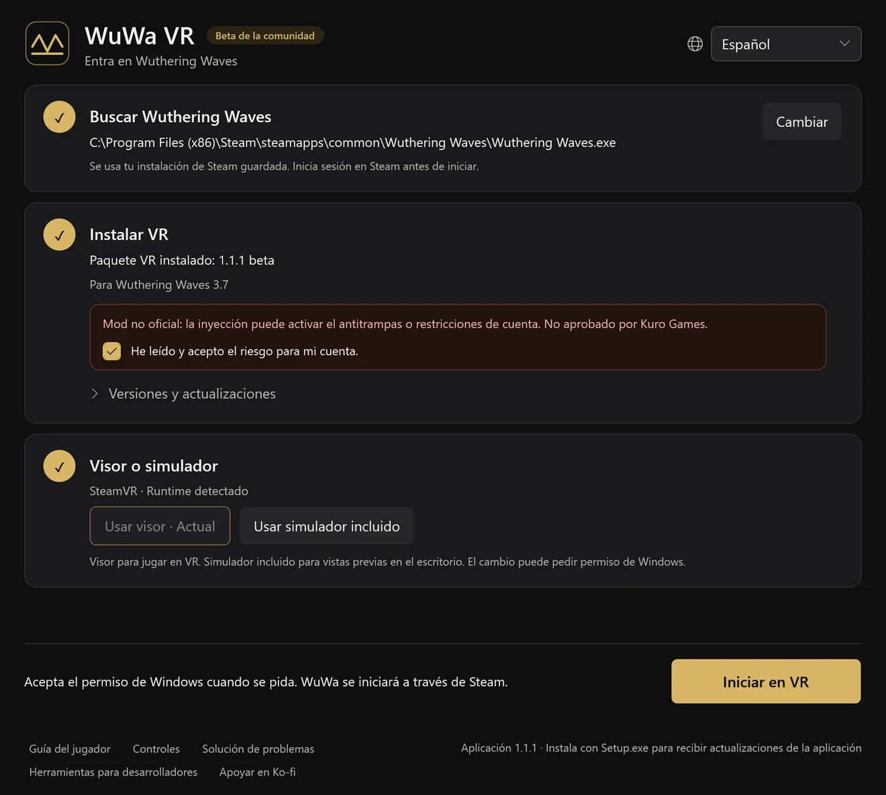

Beta de la comunidad1.1.2 · Wuthering Waves 3.7
Entra en Wuthering Waves
Un mod de VR gratuito y hecho por fans para Windows. Recorre Solaris-3 a escala real con seguimiento de cabeza, cuerpo en primera persona y atajos de mando. Basado en UEVR de praydog.
Instala y sigue tres pasos
Ejecuta WuWa-VR-Setup.exe y abre WuWa VR; el launcher te guía en el resto. La primera instalación descarga el mod de VR y no necesitas Python ni otras herramientas.
Buscar Wuthering Waves
Elige tu copia del juego de Steam o del launcher oficial de Kuro. Tu elección se guarda. Epic todavía no es compatible.
Instalar VR
Lee el aviso de riesgo para la cuenta, confirma la versión del juego e instala. Las actualizaciones conservan tus ajustes y copias de seguridad.
Visor o simulador
Abre el software de tu visor o elige el simulador incluido. Después pulsa Iniciar en VR y acepta el permiso de Windows.






Pantallas reales del launcher, generadas por la app en español. Tus rutas y tu runtime serán distintos.
En el juego, L3 + R3 abre los ajustes de UEVR. Las opciones de WuWa están en VR → WuWa Controls. Guía completa de instalación, actualización y recuperación (en inglés)
Hecho para jugar, no solo para mirar
VR estereoscópica y seguimiento de cabeza
Profundidad real en visores OpenXR. Los menús y el HUD siguen siendo usables, y puedes mover, escalar u ocultar la interfaz.
Pensado para mando
Atajos para Xbox y, de forma experimental, PlayStation, con una hoja de atajos dentro de la VR en L3 + Menu.
Cuerpo en primera persona
Mira las manos y el atuendo de tu personaje con la cabeza oculta. Seguimiento de animación opcional y modo de confort incluido.
Cámaras libres
Vistas de cámara libre, dron, avión y acrobacias para explorar y hacer capturas. Experimental.
Ventana 6DOF
Un modo de ventana opcional que coloca el juego en tu habitación. Adaptado del trabajo de Elliott Tate.
Ambos ojos coinciden
Los árboles lejanos, los objetos y la luz indirecta coinciden en cada ojo, así el mundo se ve como una sola escena.
Primera persona, hasta la animación de reposo
Mira hacia abajo y ahí está tu personaje: manos, atuendo y animaciones de reposo a escala real. Oculta los huesos de la cabeza y conserva el cuerpo, o sigue la animación completa si prefieres una vista más viva.
Graba tus propios clips en alta resolución (en inglés)Paso a paso: primera persona, una imagen limpia y la grabadora integrada.Atajos del mando
Casi todos los atajos son L3 más un botón: mantén pulsado el stick izquierdo, pulsa el botón y suelta todo. En VR, L3 + Menu muestra la misma lista como hoja.

- LTPortal sí / no
- LBCambiar modo HUD / ratón
- ViewPrimera persona sí / no
- Cruceta ↓Primera persona: animación sí/no
- RTDiorama sí / no (10x)
- RBCámara normal / fija
- MenuMostrar / ocultar guía
- Y/XPrimera / fija: altura
- BMostrar / ocultar interfaz
- ACentrar vista / portal
- R3Abrir / cerrar ajustes UEVR
Gestos
- R3×2Cámara libre sí / no
- L3×2Captura de Windows
- LT+RT→L3Pantalla estéreo sí / no
- LT+RT→R3Teatro mono sí / no (sin profundidad estéreo)
chronohaxx.github.io/wuwa-vr
El soporte de PlayStation es experimental.
Todos los atajos
USO DIARIO
| L3+B | Mostrar / ocultar interfaz |
|---|---|
| L3+A | Centrar vista / portal |
| L3+R3 | Abrir / cerrar ajustes UEVR |
| L3+Menu | Mostrar / ocultar guía |
| L3+View | Primera persona sí / no |
| L3+RB | Cámara normal / fija |
| L3+LB | Cambiar modo HUD / ratón |
| R3×2 | Cámara libre sí / no |
| L3×2 | Captura de Windows |
CÁMARAS
| L3+LT | Portal sí / no |
|---|---|
| L3+RT | Diorama sí / no (10x) |
| LT+RT→L3 | Pantalla estéreo sí / no |
| LT+RT→R3 | Teatro mono sí / no (sin profundidad estéreo) |
| L3+Y/X | Primera / fija: altura |
| LB+LT/RT | Fija: alejar / acercar |
| L3+cruceta abajo | Primera persona: animación sí/no |
| Mantén RB | Velocidad máxima con Polar walk activo |
| Con la cámara libre activa R3×2 | |
| Stick izquierdo / derecho | Cámara libre: mover / mirar |
| LT/LB | Cámara libre: subir / bajar |
| RT / doble RT | Cámara libre: impulso / turbo |
MENÚS Y HUD
| L3+cruceta izquierda / derecha | Hoja de atajos: página anterior / siguiente |
|---|---|
| L3+cruceta arriba | Hoja de atajos: página automática |
| LB+R3 | V una vez; mantén 0,8 s para la rueda Tab |
| Con el modo HUD / ratón activo L3+LB | |
| Stick izquierdo | Mover cursor |
| A/B | Clic / volver |
| X+stick izquierdo | Desplazar |
| Cruceta | Mover mapa |
| LT/RT | HUD más cerca / lejos |
| LB/RB | HUD abajo / arriba |
AJUSTES UEVR
| Con los ajustes de UEVR abiertos L3+R3 | |
|---|---|
| Cruceta / A / B | Navegar / activar / volver |
| LB/RB | Cambiar página lateral |
| Stick izquierdo (soltar RT) | Desplazar panel enfocado |
| RT+stick izq. / der. | Cámara frontal/lateral / altura |
| RT+cruceta izq. / der. | Elegir página de atajos RT |
Preguntas
¿Qué visores funcionan?
WuWa VR usa OpenXR. Se ha jugado con un Quest Pro a través de SteamVR; otros visores OpenXR deberían funcionar, pero aún no están verificados. El simulador incluido te permite probarlo en una pantalla normal.
¿Steam, launcher de Kuro o Epic?
Steam y el launcher oficial de Kuro son compatibles. Epic todavía no.
¿Pueden restringir mi cuenta?
Sí, es posible. El mod se inyecta en el juego y el antitrampas podría detectarlo. Kuro Games no lo ha aprobado. Lee el aviso de riesgo antes de instalar.
Windows avisa sobre el instalador. ¿Es normal?
El instalador no está firmado, así que SmartScreen puede mostrar un aviso. Descárgalo solo desde la versión de GitHub del proyecto y compara la suma SHA-256. Nunca desactives el antivirus ni el antitrampas.
¿Cómo funcionan las actualizaciones?
La app busca sus propias actualizaciones y pregunta antes de reiniciarse. Los paquetes de VR se actualizan aparte en el paso 02, y puedes volver a una versión instalada anterior.
¿Modifica los archivos del juego?
No. El launcher no toca los archivos del juego; el mod de VR se inyecta al iniciar.
¿Cómo lo desinstalo?
Usa Solución de problemas → Preparar desinstalación en la app y luego quita WuWa VR en Configuración de Windows → Aplicaciones. Los ajustes, copias de seguridad y grabaciones se conservan salvo que los borres.
¿Es gratis?
Sí. Es un proyecto de fans gratuito y el launcher es de código abierto con licencia MIT. El apoyo en Ko-fi es opcional y no compra ninguna garantía.
Limitaciones conocidas
- El inicio con Steam todavía falla en algunos PC; hay una corrección en pruebas. La ruta del launcher oficial de Kuro es la más probada.
- Algunas cargas de escenas y diálogos pueden quedarse bloqueadas, y los menús planos pueden mostrar un fondo en movimiento.
- La actualización de la proporción del HUD no es fiable; parte de la iluminación de NPC, los reflejos y la niebla aún necesitan pruebas.
- El cambio automático a cinemáticas es experimental y viene desactivado; no se ha probado con un vídeo prerrenderizado.
Código abierto y descargas verificables
El launcher de escritorio es de código abierto con licencia MIT y nuestros cambios al mod son públicos. Cada versión incluye el código correspondiente y sumas SHA-256.
Aún no se han verificado informes de VirusTotal para esta versión. No se afirma ningún análisis limpio ni certificación de seguridad.
Ayuda a mejorar el proyecto
Escribe en el idioma que prefieras. Prepara el borrador, revísalo en GitHub y envíalo tú. La web no publica automáticamente. Para enviarlo en GitHub necesitas iniciar sesión; copiar un borrador no requiere cuenta.
El repositorio público aún no está conectado. Puedes copiar el borrador; no se ha enviado.
Tu borrador: revísalo antes de compartir
Hecho sobre el trabajo de la comunidad
WuWa VR se apoya en el trabajo de praydog y los colaboradores de UEVR, mirudo2, polar, SannpoKun, Indath, endlessfalls y Elliott Tate.